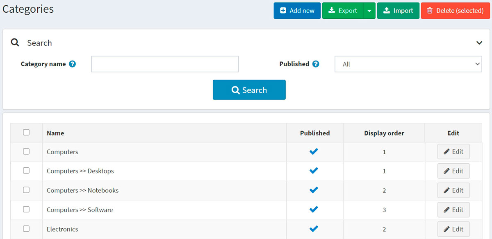
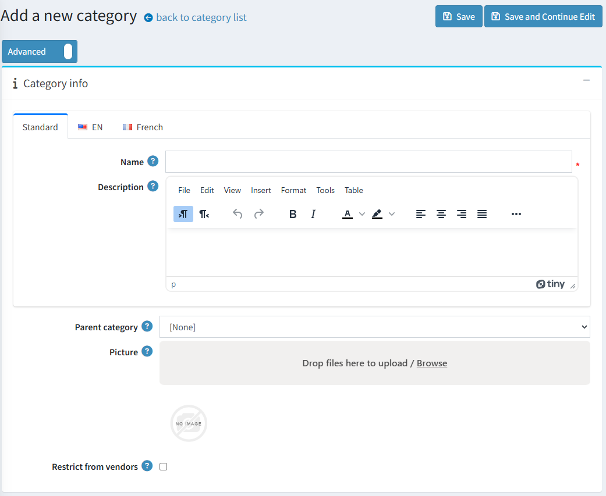
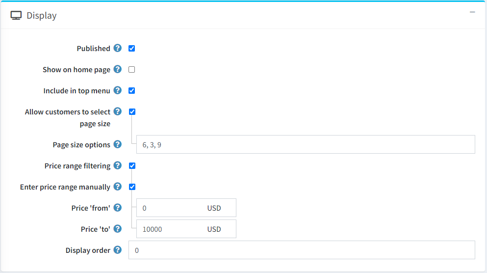
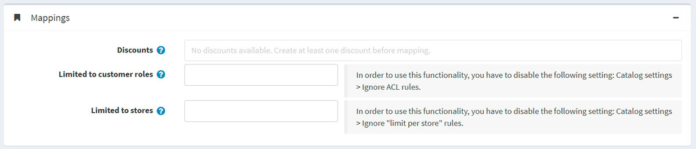
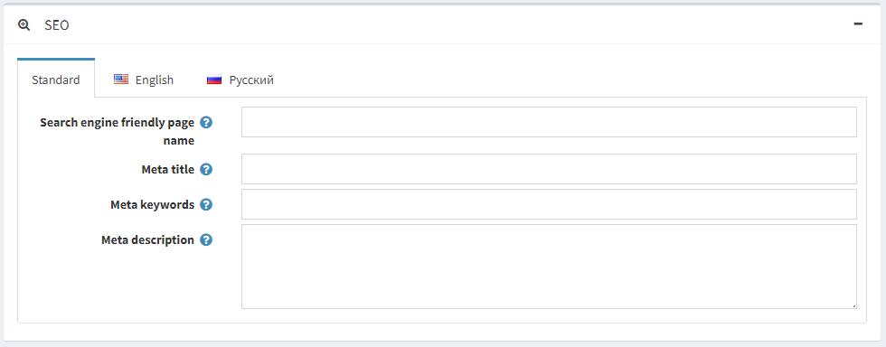
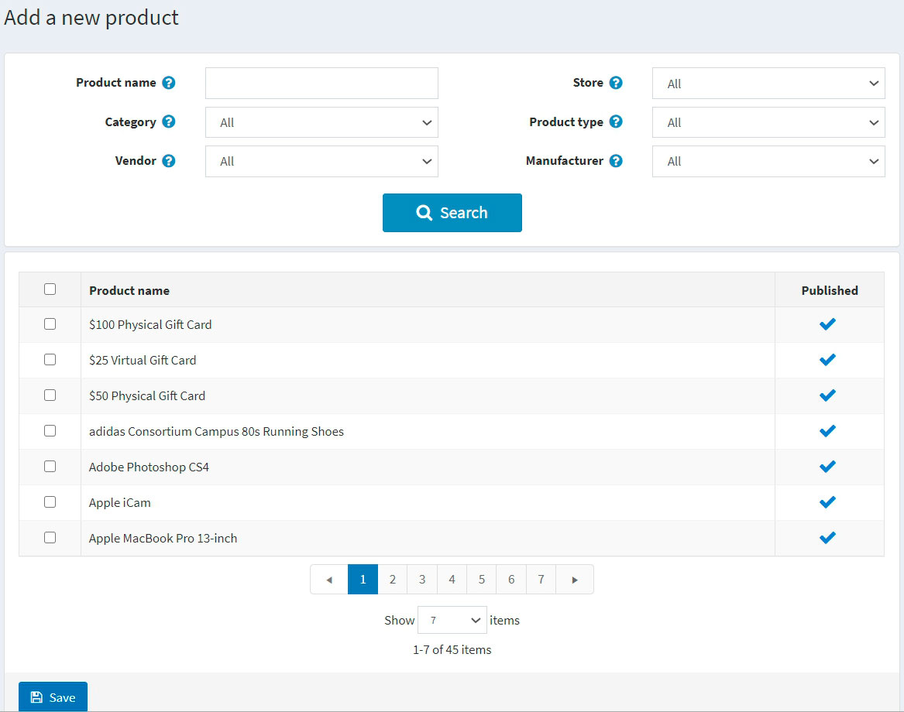
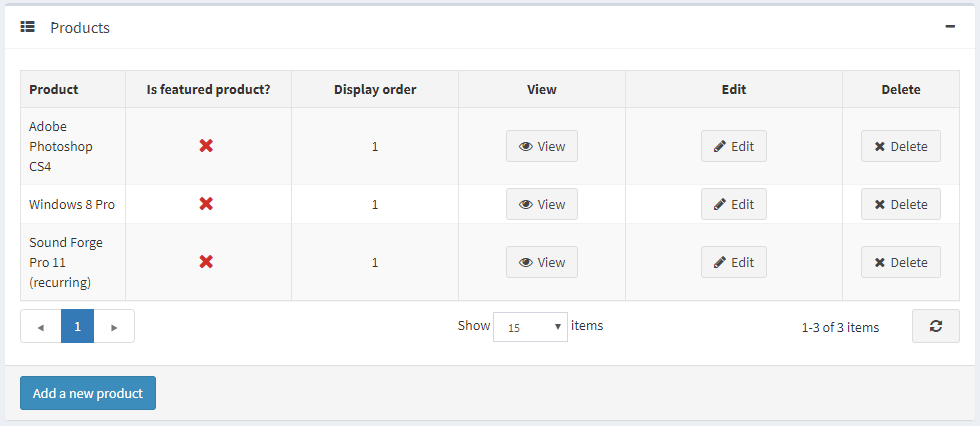

商品分類
在新增商品之前，商店管理員應先建立商品分類，以便稍後將這些商品歸類。若要管理商品分類，請前往 目錄 → 商品分類。

您可以透過 搜尋 面板輸入 分類名稱 或其部分字串、根據 已發布 屬性，或在特定的 商店（若已啟用多間商店）中篩選分類。
Note
若要從清單中移除商品分類，請選取要刪除的項目，然後點擊 刪除 (所選) 按鈕。 您可以點擊 匯出 按鈕，將商品分類匯出至外部檔案以進行備份。點擊 匯出 按鈕後，您會看到下拉式選單，可選擇 匯出為 XML 或 匯出為 Excel。
新增類別
若要新增類別，請點擊頁面頂端的 新增 (Add new) 按鈕。此時將會顯示「新增類別」視窗。

此頁面提供兩種模式：進階 (advanced) 與 基本 (basic)。您可以切換至基本模式（僅顯示主要欄位），或使用進階模式來顯示所有可用的欄位。
商品分類資訊
在 商品分類資訊 (Category info) 面板中，請定義以下分類資訊：
- 名稱 (Name) — 這是在目錄中顯示的分類名稱。
- 描述 (Description) — 分類描述。請使用編輯器來調整版面配置與字型。
- 若此分類為子分類，請從下拉式清單中選擇 父分類 (Parent category)。新的分類將會被放置於前台網站中該分類的下方。
- 圖片 (Picture) — 代表此分類的圖片。請從您的裝置上傳圖片。
- 限制供應商 (Restrict from vendors) - 勾選此項可限制供應商將商品新增至此分類。當您的商店啟用了多供應商功能時，此選項非常實用。一旦啟用，供應商將無法在管理後台的「新增商品」或「編輯商品」頁面中看到此分類。
顯示

在「顯示」面板中，定義以下類別資訊：
勾選 Published (已發佈) 核取方塊，使類別在前台網站中顯示。
勾選 Show on home page (顯示於首頁) 核取方塊，將此類別顯示在首頁。
勾選 Include in top menu (包含於頂部選單) 核取方塊，將此類別包含在首頁的頂部選單中。
勾選 Allow customers to select page size (允許顧客選擇頁面大小) 核取方塊，以啟用讓顧客選擇頁面大小的功能，即類別詳細資訊頁面上顯示的商品數量。顧客可以從商店管理員在 Page size options (頁面大小選項) 欄位中輸入的清單中進行選擇。
- 若已勾選上述核取方塊，則會顯示 Page size options 欄位。請輸入以逗號分隔的頁面大小選項清單（例如：10, 5, 15, 20）。如果顧客未做選擇，第一個選項即為預設的頁面大小。
- 若取消勾選 Allow customers to select page size 核取方塊，則會顯示 Page size (頁面大小) 選項。此選項用來設定此類別中商品的頁面大小，例如每頁顯示「4」個商品。
Tip
例如，當您在類別中新增七項商品並將頁面大小設為三時，前台網站的此類別詳細資訊頁面每頁將顯示三項商品，總頁數將為三頁。
若您想啟用依價格範圍篩選的功能，請勾選 Price range filtering (價格範圍篩選) 核取方塊。
- 若您希望手動輸入價格範圍，請勾選 Enter price range manually (手動輸入價格範圍) 核取方塊。
- 若啟用了上述設定，請輸入 Price 'from' (價格「起」)。
- 以及 Price 'to' (價格「迄」)。
- 若您希望手動輸入價格範圍，請勾選 Enter price range manually (手動輸入價格範圍) 核取方塊。
Display order (顯示順序) — 類別顯示的順序編號。此顯示編號用於排序前台網站中的類別（遞增排序）。顯示順序為 1 的類別將被放置在清單的最上方。
如果您在 系統 → 範本 (System → Templates) 頁面安裝了自訂類別範本，則會顯示 Category template (類別範本) 欄位。此範本定義了此類別（及其商品）的顯示方式。
對應 (Mappings)

在 Mappings 面板中，定義下列類別資訊：
折扣 (Discounts) — 選擇與此類別關聯的折扣。您可以在 促銷 → 折扣 頁面中建立折扣。閱讀更多關於折扣的資訊，請參考 折扣 章節。
Note
請注意，這裡僅顯示類型為 指派至類別 (assigned to categories) 的折扣。將折扣對應至類別後，這些折扣將套用於該類別下的所有商品。
Note
若要使用折扣功能，請確保 設定 → 設定 → 目錄設定 → 效能 面板中的 忽略折扣 (全站) 設定已停用。
在 限於顧客角色 (Limited to customer roles) 欄位中，選擇可以在目錄中看到此類別的顧客角色。如果不需要此選項，請保持此欄位留空，這樣所有人都能看到該類別。
Note
若要使用此功能，您必須停用下列設定：設定 → 目錄設定 → 忽略 ACL 規則 (全站)。閱讀更多關於存取控制清單 (ACL) 的資訊 here。
如果該類別僅在特定商店販售，請在 限於商店 (Limited to stores) 欄位中選擇對應的商店。如果不需要此功能，請保持欄位留空。
Note
若要使用此功能，您必須停用下列設定：目錄設定 → 忽略「每家商店限制」規則 (全站)。閱讀更多關於多商店功能的資訊 here。
SEO

在 SEO 面板中，請定義下列詳細資訊：
搜尋引擎友善網頁名稱 — 搜尋引擎所使用的頁面名稱。如果您將此欄位留空，類別頁面的 URL 將會使用類別名稱來產生。如果您輸入 custom-seo-page-name，則會使用下列自訂 URL：
http://www.yourStore.com/custom-seo-page-name。Meta 標題 指定了網頁的標題。這是一段插入到您網頁表頭（header）的程式碼：
<head> <title> Creating Title Tags for Search Engine Optimization & Web Usability </title> </head>Meta 關鍵字 — 類別的 meta 關鍵字，代表該頁面最重要主題的簡潔清單。Meta 關鍵字標籤看起來像這樣：
<meta name="keywords" content="keyword, keyword, keyword phrase, etc.">Meta 描述 — 類別的描述。Meta 描述標籤是頁面內容的簡短摘要。Meta 描述標籤看起來像這樣：
<meta name="description" content="Brief description of the contents of your page">
點擊 儲存並繼續編輯 按鈕以繼續將商品加入至此類別。
商品
商品 面板包含與所選類別相關的商品列表。這些商品可以在型錄中按類別進行篩選。商店擁有者可以將新商品新增至此類別。請注意，您必須先儲存該類別，才能開始新增商品。
點擊 新增商品 以搜尋您想要納入此類別的商品。您可以透過 商品名稱、類別、供應商、商店、商品類型 以及 製造商 進行搜尋。

選取您想要新增至此類別的商品，然後點擊 儲存 按鈕。這些商品將會顯示在所選類別之下。

在將商品新增至類別後，請點擊商品旁邊的 編輯 按鈕，於 商品 表格中定義以下資訊：
- 是否為精選商品。
- 顯示順序。
Note
點擊 檢視 後，您將被重新導向至 編輯商品詳細資料 頁面。
點擊 儲存。新的類別將會顯示在前端商店的父類別之下。
匯入類別
如果您不想手動將所有類別新增至目錄中，可以使用匯入選項。
Note
在開始匯入之前，您應該下載 Excel 格式的表格範本。為了確保正確且精確地匯入您的類別，請務必將表格中的所有欄位名稱正確命名（與下載的表格完全一致）。
並非一定要填寫所有表格欄位。系統會根據已填寫的欄位來建立類別。
匯入過程需要消耗大量的記憶體資源。因此，不建議一次匯入超過 500–1000 筆記錄。如果您有更多的記錄，建議將其分割成多個 Excel 檔案並分別進行匯入。